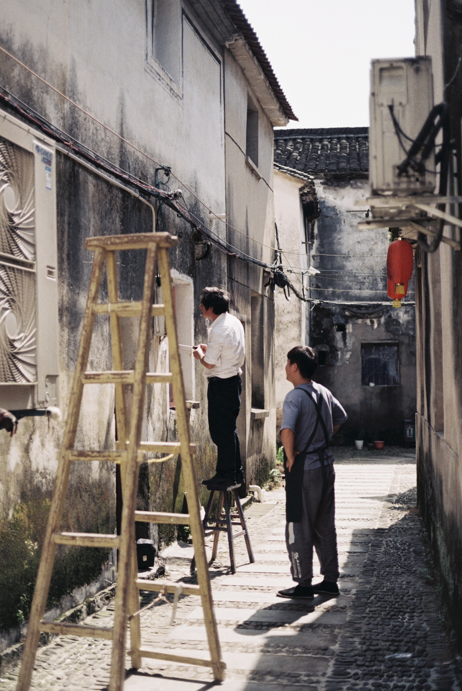
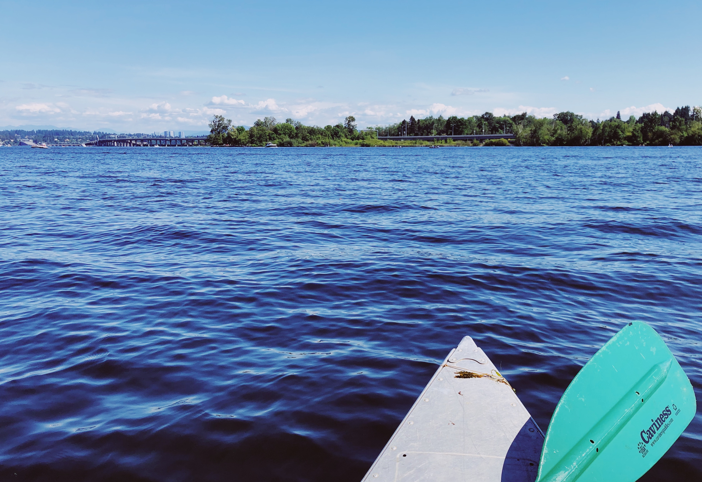

Tonglu
Tonglu (桐庐), jurisdictionally part of Hangzhou in Zhejiang Province, lies midway along the Qiantang River at the heart of the Fuchun River–Xin’an River tourist belt, a national scenic tourist area. Tonglu, with its long history and rich cultural heritage, has been described as “a land of talented spirits and a place of unrestrained natural grace.” Famous attractions here include Yaolin Fairyland, the Yan Ziling Fishing Platform, the Chuiyun Tongtian River Scenic Area, and the Daqishan National Forest Park, all of which are very worth a visit.
Lake Washington
Lake Washington is a large freshwater lake adjacent to the city of Seattle.[1] It is the largest lake in King County and the second largest natural lake in the state of Washington, after Lake Chelan. It borders the cities of Seattle on the west, Bellevue and Kirkland on the east, Renton on the south and Kenmore on the north, and encloses Mercer Island. The lake is fed by the Sammamish River at its north end and the Cedar River at its south.
 